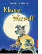

Kleiner Werwolf

Manchmal macht es Spaß, ein Werwolf zu sein! Auf dem Heimweg vom Kino wird Motte, ein zehnjahriger Junge, von einem seltsamen Hund gebissen. Nur ein bisschen, es tut fast nicht weh. Der Hund war ein Werwolf, aber das merkt Motte erst, als er sich selbst in einen verwandelt: Seine Fingernagel werden zu Krallen und ihm wachst ein Fell! Manchmal macht Motte das Werwolf-Sein sogar Spaß - wenn die gro?en Jungs endlich Angst vor ihm haben oder er nachts den Mond anheult. Aber trotzdem ist er heilfroh, als er gemeinsam mit seiner Freundin Lina einen Weg findet, wieder ein ganz normaler Junge zu werden.